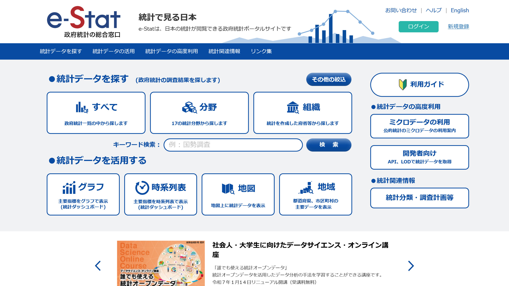
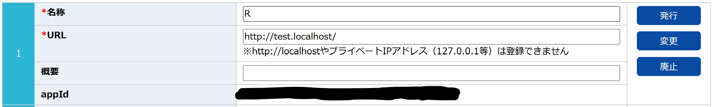

# インストール
# pak::pak(c("httr", "xml2", "tidyverse"))
library(httr)
library(xml2)
library(tidyverse)はじめに
今回は説明するという言い方がおこがましい程度の備忘録的な内容です。
今後データを使う仕事をするにあたり、もう少し統計データに詳しくなりたいと思い、e-Statでよく目にするAPIに目を付けました。正直APIというのが何かわからないレベルからのスタートでしたが、調べながら初歩的な部分をすこーし理解できた気がしないでもありません。
今回はAPIの初歩の初歩をまとめていきたいと思います。
e-Statでの準備
まずはじめにe-Statでユーザー登録をし、アプリケーションIDを取得する必要があります。
ブラウザでe-Statを開き、画面右上の「新規登録」から登録します。難しい点はほとんどないと思うので詳細は省略しますが、登録できたらログインした状態にしておいてください。

ログインできたら、上部の青いナビゲーションバーに「マイページ」が出てきますので、そこをクリックしてマイページに進みます。
するとナビゲーションバーの少し下に水色のバーが出てきて、そこに「API機能（アプリケーションID発行）」とあるので、そこをクリックします。

するとアプリケーションIDの取得ということで3つの欄が出てきますので、1番上の欄を使用していきます。名称の部分に任意の名前を入れ、URLはそのままにしておきます。右側の「発行」をクリックすれば「appId」の部分にアプリケーションIDが表示され、これを後ほど使うことになります。

使用するパッケージ
Rに戻ります。
今回は以下の3つのパッケージを使用します。
{httr}はHTTPリクエストを送信してWeb APIからデータを取得するためのパッケージで、{xml2}はXMLデータを解析して必要な情報を抽出するためのパッケージです。XMLはデータを構造化して表現するためのフォーマットであり、APIなどでデータを受け取る際によく使われるようです。
{tidyverse}はおなじみのデータハンドリング用です。
APIでデータを取得
APIリクエストURLを取得、格納
まずはe-Statで取得したい統計のページへアクセスします。今回は令和2年国勢調査の人口等基本集計、総人口と男女別人口のデータを取得したいと思います。今回使うページのURLは以下です。
ページにAPIと書かれた青いアイコンがあるので、そこをクリックします。するとURLが表示されるので、表示されたURLをコピーしておきます。

次にRで今コピーしたURLを格納します。ダブルクォーテーションで囲んでください。
url <- "https://api.e-stat.go.jp/rest/3.0/app/getStatsData?appId=&lang=J&statsDataId=0003445078&metaGetFlg=Y&cntGetFlg=N&explanationGetFlg=Y&annotationGetFlg=Y§ionHeaderFlg=1&replaceSpChars=0"ここで注意ですが、URLの中にappId=という部分があり、ここに先ほど作成したアプリケーションIDを入れる必要があります。仮にアプリケーションIDを123456789とすると、
url <- "https://api.e-stat.go.jp/rest/3.0/app/getStatsData?appId=123456789&lang=J&statsDataId=0003445078&metaGetFlg=Y&cntGetFlg=N&explanationGetFlg=Y&annotationGetFlg=Y§ionHeaderFlg=1&replaceSpChars=0"となります。
appIdの部分を直接入れ替えることに不安がある方は、以下の方法でも可能です。
appId <- "123456789" # ここにアプリケーションIDを入れます
# コピーしてきたURL
url_template <- "https://api.e-stat.go.jp/rest/3.0/app/getStatsData?appId=%s&lang=J&statsDataId=0003445078&metaGetFlg=Y&cntGetFlg=N&explanationGetFlg=Y&annotationGetFlg=Y§ionHeaderFlg=1&replaceSpChars=0"
url <- sprintf(url_template, appId)sprintf()は文字列の中に変数を埋め込む関数です。%sの部分がappIdで置き換えられるようになっています。
URLを使ってAPIリクエストを実行
次に入力したURLを使ってAPIリクエストを実行します。
response <- GET(url)このレスポンスの内容をテキストとして取得し、XMLとして読み込んでいきます。responseにはステータスコードが含まれているのですが、これが200だと読み込みが成功しています。成功していれば読み込むように設定します。
if (status_code(response) == 200) {
xml_data <- read_xml(
content(response, as = "text", encoding = "UTF-8")
)
print(xml_data)
} else {
stop(
"データの取得に失敗しました。HTTPステータスコード: ",
status_code(response)
)
}{xml_document}
<GET_STATS_DATA noNamespaceSchemaLocation="https://api.e-stat.go.jp/rest/3.0/schema/GetStatsData.xsd" xmlns:xsi="http://www.w3.org/2001/XMLSchema-instance">
[1] <RESULT>\n <STATUS>0</STATUS>\n <ERROR_MSG>正常に終了しました。</ERROR_MSG>\n <D ...
[2] <PARAMETER>\n <LANG>J</LANG>\n <STATS_DATA_ID>0003445078</STATS_DATA_ID ...
[3] <STATISTICAL_DATA>\n <RESULT_INF>\n <TOTAL_NUMBER>12258</TOTAL_NUMBER ...ステータスコードが200になっていたようなので{xml_document}としていろいろ出てきました。また、xml_dataに読み込んだXMLが保存されています。
XMLの構造確認
次にXMLの構造を確認してみます。しかしこれは非常に長くなるので、結果は表示しません。実際に手元で実行してみてください。
xml_structure(xml_data)結果の中には様々な情報が構造化されて格納されていることがわかります。僕たちが抽出したい情報は{text}と表示されてしまっているので、このままでは{text}が何か確認することができませんが、この中には統計名や更新日など、統計に関する様々な情報（タグ）が含まれます1。必要に応じてここから情報を取得することができるので、試しにいろいろやってみましょう。
- 統計表の名前
table_name <- xml_text(xml_find_first(xml_data, "//TABLE_INF/STATISTICS_NAME"))
print(table_name)[1] "令和２年国勢調査 人口等基本集計 （主な内容：男女・年齢・配偶関係，世帯の構成，住居の状態，母子・父子世帯，国籍など）"- 調査日
survey_date <- xml_text(xml_find_first(xml_data, "//TABLE_INF/SURVEY_DATE"))
print(survey_date)[1] "202010"- 統計表の公開日
open_date <- xml_text(xml_find_first(xml_data, "//TABLE_INF/OPEN_DATE"))
print(open_date)[1] "2021-11-30"いろいろ結果が出てきました。ここで、使用していた関数について説明します。
まずxml_text()です。これはXML内の ノード2のテキストを取得する関数です。内容をテキストとして抽出するものというようなイメージだと思ってください。
次にxml_find_first()です。これは括弧内で指定したパスと合致する最初のものを抽出してくるという関数です。例えば上の1番では、"//TABLE_INF/STATISTICS_NAME"に一致する部分を探して、そこに書かれている内容を引っ張ってきます。最初ということは複数あるのか？と僕も最初は思ったのですが、どうやら1つしかない要素に対しても一般的に使うようです3。
TipXPath（XML上のパス）について
XMLの構造を丁寧に見た方の中には、TABLE_INFは実はGET_STATS_DATAの中のさらにSTATISTICAL_DATAの中に入っているがそれは指定しなくてよいのか、と思った方もいるかもしれません。そこは最初の2つのスラッシュ（//）で対応していて、これは全体のどこにあっても、例えばTABLE_INF/STATISTICS_NAMEとなっている部分を見つけ出して中身を抽出するということを意味しています。つまり、上記の書き方で"/GET_STATS_DATA/STATISTICAL_DATA/TABLE_INF/STATISTICS_NAME"をヒットさせることができるわけです。
データを取得
ではいろいろ確認できたところでデータを取得する作業に入ります。
データは//DATA_INF/VALUEというところに含まれているので、このパスを用います。また構造を確認していただけばわかるように、VALUEというのは大量にありますのでxml_find_first()では最初の1つしか取得できず、不適切です。ここではxml_find_all()ですべての用をを取得していきます。
加えて、
<VALUE [tab, cat01, area, time, unit]>となっているように、VALUEには5つの属性が付与されており、それぞれ統計表のタブ（表のバージョンや種類）、統計のカテゴリ、自治体コード、時間（ここでは年）、単位を示します。これを踏まえて必要な情報を以下のコードでは取得しています。
# データがあるノードをすべて取得
value_nodes <- xml_find_all(xml_data, "//DATA_INF/VALUE")
df <- tibble(
# xml_attr()で特定の属性を取得
area = xml_attr(value_nodes, "area"),
time = xml_attr(value_nodes, "time"),
category = xml_attr(value_nodes, "cat01"),
# valueはテキストとして取得したのち数値に変換
value = as.numeric(xml_text(value_nodes))
)
print(df)# A tibble: 12,258 × 4
area time category value
<chr> <chr> <chr> <dbl>
1 00000 2020000000 0 126146099
2 01000 2020000000 0 5224614
3 01100 2020000000 0 1973395
4 01101 2020000000 0 248680
5 01102 2020000000 0 289323
6 01103 2020000000 0 265379
7 01104 2020000000 0 211835
8 01105 2020000000 0 225298
9 01106 2020000000 0 135777
10 01107 2020000000 0 217040
# ℹ 12,248 more rowsこのままだと少しわかりにくいですね。timeは年なので上4桁だけ取り出したいし、categoryには３つの数字があるのですが、それぞれが何を意味しているのか分かりません。
ひとまずカテゴリについて確認しておきましょう。XMLの中にCLASS_INFがあり、その中に情報が含まれています。カテゴリ（cat01がそれです）について知りたい場合は"//CLASS_INF/CLASS_OBJ[@id='cat01']/CLASS"で確認できます。以下のコードを実行してください。
# xml_data内のノードを取得
cat01_nodes <- xml_find_all(
xml_data,
"//CLASS_INF/CLASS_OBJ[@id='cat01']/CLASS"
)
# cat01のコードと対応する名前を取得
df_cat01 <- tibble(
cat01_code = xml_attr(cat01_nodes, "code"),
cat01_name = xml_attr(cat01_nodes, "name")
)
# 結果を表示
print(df_cat01)# A tibble: 3 × 2
cat01_code cat01_name
<chr> <chr>
1 0 総数
2 1 男
3 2 女 0が総数、1が男、2が女であることがわかりました。なのでここでカテゴリを書き換え、ついでに年も整理し並べ替えておきましょう。
df_cleaned <- df |>
arrange(area, time, category) |>
mutate(
# timeは上4桁を取り出す
time = as.integer(substr(time, 1, 4)),
# case_when()で条件分岐
category = case_when(
# 文字列として格納されているので""で囲みます
category == "0" ~ "population",
category == "1" ~ "pop_male",
category == "2" ~ "pop_female"
)
)
print(df_cleaned)# A tibble: 12,258 × 4
area time category value
<chr> <int> <chr> <dbl>
1 00000 2020 population 126146099
2 00000 2020 pop_male 61349581
3 00000 2020 pop_female 64796518
4 01000 2020 population 5224614
5 01000 2020 pop_male 2465088
6 01000 2020 pop_female 2759526
7 01100 2020 population 1973395
8 01100 2020 pop_male 918682
9 01100 2020 pop_female 1054713
10 01101 2020 population 248680
# ℹ 12,248 more rowsもしカテゴリの各種をそれぞれ列にしたければpivot_wider()でできます。
df_wide <- df_cleaned |>
pivot_wider(
names_from = category,
values_from = value
)
print(df_wide)# A tibble: 4,086 × 5
area time population pop_male pop_female
<chr> <int> <dbl> <dbl> <dbl>
1 00000 2020 126146099 61349581 64796518
2 01000 2020 5224614 2465088 2759526
3 01100 2020 1973395 918682 1054713
4 01101 2020 248680 112853 135827
5 01102 2020 289323 136596 152727
6 01103 2020 265379 126023 139356
7 01104 2020 211835 100062 111773
8 01105 2020 225298 104154 121144
9 01106 2020 135777 62347 73430
10 01107 2020 217040 100027 117013
# ℹ 4,076 more rowsこれでひとまずデータフレームとして整理することができました。ここからさらに整理したり、分析を回していきましょう！
データベースから取得する
今回は国勢調査のような既にまとめられたデータを用いましたが、e-Statのデータベースを使えば必要なデータを選択して取得することができます。
例えばこちらから「市区町村データ」を選択し「データ表示」をクリックします。
出てきた画面から地域を選択し、「確定」をクリックしたのち取得したいデータを選択し、再度「確定」をクリックします。


するとデータが画面に表示されますが、ここで右上の「API」をクリックし、表示されたURLをコピーします。ここからは上で書いてきた手順と同様です。

おわりに
APIは正直初心者には難しいなと感じましたが、大体のコードはそのまま使いまわせますし、XMLの構造を少し辛抱して眺めてみればどこに何が入っているのか少しずつわかってきました。
CSVでダウンロードすると余計な情報量が多く分析の手間に感じていましたので、春休みを機に少しではありますが知れてよかったと思います。ぜひ活用してみて下さい。